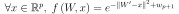
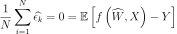
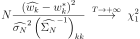
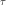
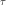
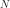
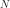
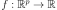

Prolongements¶
Base d’apprentissage et base de test¶
Les deux exemples de régression et de classification La régression et Problème de classification pour les réseaux de neurones ont montré que la structure du réseau de neurones la mieux adaptée a une grande importance. Dans ces deux cas, une rapide vérification visuelle permet de juger de la qualité du modèle obtenu après apprentissage, mais bien souvent, cette « vision » est inaccessible pour des dimensions supérieures à deux. Le meilleur moyen de jauger le modèle appris est de vérifier si l’erreur obtenue sur une base ayant servi à l’apprentissage (ou base d’apprentissage) est conservée sur une autre base (ou base de test) que le modèle découvre pour la première fois.
Soit
l’ensemble des observations disponibles. Cet ensemble est
aléatoirement scindé en deux sous-ensembles et  de telle sorte que :
de telle sorte que :
Ce découpage est valide si tous les exemples de la base  obéissent à la même loi, les deux bases et
sont dites homogènes. Le réseau de neurones sera donc appris sur la
base d’apprentissage et « testé » sur la base de test
. Le test consiste à vérifier que l’erreur sur
est sensiblement égale à celle sur , auquel cas on dit que le
modèle (ou réseau de neurones) généralise bien. Le modèle trouvé
n’est pas pour autant le bon modèle mais il est robuste.
La courbe figure suivante illustre une définition du modèle optimal
comme étant celui qui minimise l’erreur sur la base de test.
Lorsque le modèle choisi n’est pas celui-là, deux cas sont possibles :
obéissent à la même loi, les deux bases et
sont dites homogènes. Le réseau de neurones sera donc appris sur la
base d’apprentissage et « testé » sur la base de test
. Le test consiste à vérifier que l’erreur sur
est sensiblement égale à celle sur , auquel cas on dit que le
modèle (ou réseau de neurones) généralise bien. Le modèle trouvé
n’est pas pour autant le bon modèle mais il est robuste.
La courbe figure suivante illustre une définition du modèle optimal
comme étant celui qui minimise l’erreur sur la base de test.
Lorsque le modèle choisi n’est pas celui-là, deux cas sont possibles :
Le nombre de coefficients est trop petit : le modèle généralise bien mais il existe d’autres modèles meilleurs pour lesquels l’erreur d’apprentissage et de test est moindre.
Le nombre de coefficients est trop grand : le modèle généralise mal, l’erreur d’apprentissage est faible et l’erreur de test élevée, le réseau a appris la base d’apprentissage par coeur.
Figure F1 : Modèle optimal pour la base de test

Ce découpage des données en deux bases d’apprentissage et de test est fréquemment utilisé pour toute estimation de modèles résultant d’une optimisation réalisée au moyen d’un algorithme itératif. C’est le cas par exemple des modèles de Markov cachés. Elle permet de s’assurer qu’un modèle s’adapte bien à de nouvelles données.
Fonction de transfert à base radiale¶
La fonction de transfert est dans ce cas à base radiale (souvent abrégée par RBF pour radial basis function. Elle ne s’applique pas au produit scalaire entre le vecteur des poids et celui des entrées mais à la distance euclidienne entre ces vecteurs.
Définition D1 : neurone distance
Un neurone distance à  entrées est une fonction
entrées est une fonction
 définie par :
définie par :

 ,
,  avec
Ce neurone est un cas particulier du suivant qui pondère chaque
dimension par un coefficient. Toutefois, ce neurone possède
coefficients où est le nombre d’entrée.
Définition D2 : neurone distance pondérée
Pour un vecteur donné  ,
on note .
Un neurone distance pondérée à entrées est une fonction
définie par :
,
on note .
Un neurone distance pondérée à entrées est une fonction
définie par :
,
avec
La fonction de transfert est  est le potentiel de ce neurone donc :
.
est le potentiel de ce neurone donc :
.
L’algorithme de rétropropagation est modifié par l’insertion d’un tel neurone dans un réseau ainsi que la rétropropagation. Le plus simple tout d’abord :
(1)¶
Pour le neurone distance simple, la ligne (1) est superflue, tous les coefficients sont égaux à 1. La relation (6) reste vraie mais n’aboutit plus à:eq:algo_retro_5, celle-ci devient en supposant que la couche d’indice ne contient que des neurones définie par la définition précédente.

Poids partagés¶
Les poids partagés sont simplement un ensemble de poids qui sont
contraints à conserver la même valeur. Soit  un groupe de poids
partagés dont la valeur est . Soit
un groupe de poids
partagés dont la valeur est . Soit  et
un exemple de la base d’apprentissage (entrées et sorties désirées),
l’erreur commise par le réseau de neurones est
et
un exemple de la base d’apprentissage (entrées et sorties désirées),
l’erreur commise par le réseau de neurones est  .
.
Par conséquent, si un poids  appartient à un groupe de poids partagés,
sa valeur à l’itération suivante sera :
appartient à un groupe de poids partagés,
sa valeur à l’itération suivante sera :

Cette idée est utilisée dans les réseaux neuronaux convolutifs (deep learning, CS231n Convolutional Neural Networks for Visual Recognition).
Dérivée par rapport aux entrées¶
On note  un exemple de la base d’apprentissage.
Le réseau de neurones est composé de
un exemple de la base d’apprentissage.
Le réseau de neurones est composé de  couches,
couches,  est le
nombre de neurones sur la ième couche,
est le
nombre de neurones sur la ième couche,  est le nombre d’entrées.
Les entrées sont appelées ,
sont les potentiels des neurones de la première couche, on en déduit que, dans le cas d’un neurone classique (non distance) :
est le nombre d’entrées.
Les entrées sont appelées ,
sont les potentiels des neurones de la première couche, on en déduit que, dans le cas d’un neurone classique (non distance) :
Comme le potentiel d’un neurone distance n’est pas linéaire par rapport aux entrées , la formule devient dans ce cas :

Régularisation ou Decay¶
Lors de l’apprentissage, comme les fonctions de seuil du réseau de
neurones sont bornées, pour une grande variation des coefficients,
la sortie varie peu. De plus, pour ces grandes valeurs, la dérivée
est quasi nulle et l’apprentissage s’en trouve ralenti. Par conséquent,
il est préférable d’éviter ce cas et c’est pourquoi un terme de
régularisation est ajouté lors de la mise à jour des
coefficients (voir [Bishop1995]). L’idée consiste à ajouter
à l’erreur une pénalité fonction des coefficients du réseau de neurones :
 .
.
Et lors de la mise à jour du poids à l’itération  :
.
:
.
Le coefficient  peut décroître avec le nombre
d’itérations et est en général de l’ordre de
peut décroître avec le nombre
d’itérations et est en général de l’ordre de  pour un
apprentissage avec gradient global, plus faible pour un
apprentissage avec gradient stochastique.
pour un
apprentissage avec gradient global, plus faible pour un
apprentissage avec gradient stochastique.
Problèmes de gradients¶
La descente du gradient repose sur l’algorithme de rétropropagation qui propoge l’erreur depuis la dernière couche jusqu’à la première. Pour peu qu’une fonction de seuil soit saturée. Hors la zone rouge, le gradient est très atténué.
(Source code, png, hires.png, pdf)
{kind=link}
{kind=link}

Après deux couches de fonctions de transferts, le gradient est souvent diminué. On appelle ce phénomène le Vanishing gradient problem. C’est d’autant plus probable que le réseau est gros. Quelques pistes pour y remédier : Recurrent Neural Networks Tutorial, Part 3 – Backpropagation Through Time and Vanishing Gradients, Why are deep neural networks hard to train?. L’article Deep Residual Learning for Image Recognition présente une structure de réseau qui va dnas le même sens. De la même manière, la norme du gradient peut exploser plus particulièrement dans le cas des réseaux de neurones récurrents : Understanding the exploding gradient problem.
Sélection de connexions¶
Ce paragraphe présente un algorithme de sélection de l’architecture
d’un réseau de neurones proposé par Cottrel et Al. dans [Cottrel1995].
La méthode est applicable à tout réseau de neurones mais n’a été démontrée
que pour la classe de réseau de neurones utilisée pour la
régression. Les propriétés qui suivent ne sont
vraies que des réseaux à une couche cachée et dont les sorties
sont linéaires. Soit  un exemple de la base
d’apprentissage, les résidus de la régression sont supposés normaux
et i.i.d. L’erreur est donc (voir Formulation du problème de la régression) :
.
un exemple de la base
d’apprentissage, les résidus de la régression sont supposés normaux
et i.i.d. L’erreur est donc (voir Formulation du problème de la régression) :
.
On peut estimer la loi asymptotique des coefficients du réseau de neurones. Des connexions ayant un rôle peu important peuvent alors être supprimées sans nuire à l’apprentissage en testant la nullité du coefficient associé. On note les poids trouvés par apprentissage et les poids optimaux. On définit :
(2)¶![\begin{eqnarray*}
\text{la suite } \widehat{\varepsilon_{k}} &=& f\left( \widehat{W} ,X_{k}\right) -Y_{k}, \;
\widehat{\sigma}_{N}^{2}=\dfrac{1}{N}\underset
{k=1}{\overset{N}{\sum}}\widehat{\varepsilon_{k}}^{2} \\
\text{la matrice }
\widehat{\Sigma_{N}} &=& \dfrac{1}{N}\left[ \nabla_{\widehat{W}%
}e\left( W,X_{k},Y_{k}\right) \right]
\left[ \nabla_{\widehat{W}}
e\left( W,X_{k},Y_{k}\right) \right] ^{\prime}
\end{eqnarray*}](../../_images/math/b9251f12bf18caba5ce5e2729539d993877e7af0.svg)
Théorème T1 : loi asymptotique des coefficients
Soit  un réseau de neurone défini par perceptron
composé de :
un réseau de neurone défini par perceptron
composé de :
une couche d’entrées
une couche cachée dont les fonctions de transfert sont sigmoïdes
une couche de sortie dont les fonctions de transfert sont linéaires
Ce réseau sert de modèle pour la fonction
dans le problème de régression
avec un échantillon  ,
les résidus sont supposés normaux.
La suite définie par (2) vérifie :
,
les résidus sont supposés normaux.
La suite définie par (2) vérifie :

Et le vecteur aléatoire vérifie :
Où la matrice  est définie par (2).
est définie par (2).
end{xtheorem}
Figure F2 : Réseau de neurones pour lequel la sélection de connexions s’applique

La démonstration de ce théorème est donnée par l’article [Cottrel1995]. Ce théorème mène au corollaire suivant :
Corollaire C1 : nullité d’un coefficient
Les notations utilisées sont celles du théorème sur loi asymptotique des coefficients.
Soit un poids du réseau de neurones
d’indice quelconque  . Sa valeur estimée est ,
sa valeur optimale
. Sa valeur estimée est ,
sa valeur optimale  . D’après le théorème :
. D’après le théorème :

Ce résultat permet, à partir d’un réseau de neurones, de supprimer les connexions pour lesquelles l’hypothèse de nullité n’est pas réfutée. Afin d’aboutir à l’architecture minimale adaptée au problème, Cottrel et Al. proposent dans [Cottrel1995] l’algorithme suivant :
Théorème T2 : sélection d’architecture
Les notations utilisées sont celles du théorème
loi asymptotique des coefficients.
est un réseau de neurones
de paramètres  . On définit la constante ,
en général
. On définit la constante ,
en général  puisque
si
puisque
si  .
.
Initialisation
Une architecture est choisie pour le réseau de neurones incluant un nombre M de paramètres.
Apprentissage
Le réseau de neurones est appris. On calcule les nombre et matrice
 et .
La base d’apprentissage contient  exemples.
et .
La base d’apprentissage contient  exemples.
Test
in 

Sélection


Cet algorithme est sensible au minimum local trouvé lors de l’apprentissage, il est préférable d’utiliser des méthodes du second ordre afin d’assurer une meilleure convergence du réseau de neurones.
L’étape de sélection ne supprime qu’une seule connexion. Comme l’apprentissage
est coûteux en calcul, il peut être intéressant de supprimer toutes les connexions
qui vérifient . Il est toutefois conseillé de ne
pas enlever trop de connexions simultanément puisque la suppression d’une connexion nulle peut
réhausser le test d’une autre connexion, nulle à cette même itération, mais non nulle à l’itération suivante.
Dans l’article [Cottrel1995], les auteurs valident leur algorithme dans le cas d’une
régression grâce à l’algorithme suivant.
Algorithme A1 : validation de l’algorithme de sélection des coefficients
Choix aléatoire d’un modèle
Un réseau de neurones est choisi aléatoirement,
soit  la fonction qu’il représente.
Une base d’apprentissage  (ou échantillon)
de observations est générée aléatoirement à partir de ce modèle :
(ou échantillon)
de observations est générée aléatoirement à partir de ce modèle :
Choix aléatoire d’un modèle
L’algorithme de sélection
à un réseau de neurones plus riche que le modèle choisi
dans l’étape d’initilisation. Le modèle sélectionné est noté  .
.
Validation
Si , l’algorithme de sélection est validé.
La réduction des réseaux de neurones ne se posent plus en ce sens. Les réseaux de neurones sont aujourd’hui des réseaux de neurones de neurones profonds qui ne suivent plus cette architecture à une couche.